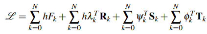

← Publications Conference paper 2017
Adjoint-based derivative evaluation methods for flexible multibody systems with rotorcraft applications
55th AIAA Aerospace Sciences Meeting, Grapevine, Texas, Jan 2017; Special Session on Sensitivity Analysis of High-Fidelity Rotorcraft Computations
High-fidelity rotorcraft simulations involve tight coupling between aerodynamics, structures and structural dynamics. As a step towards developing fully-integrated high-fidelity rotorcraft simulation and gradient-based design optimization tool, this paper presents analysis and discrete-adjoint sensitivity formulations for flexible multibody systems. The governing equations are treated in a descriptor form, as second-order implicit functions of state and design variables. The solution procedures for the governing equations are discussed in the context of different time marching schemes, including backward difference formulas, diagonally implicit Runge–Kutta, Newmark and Adams–Bashforth–Moulton methods. The corresponding time-dependent discrete adjoint derivatives are formulated and numerically verified with the complex-step method. The assessments of parallel scalability of the implementation are shown along with flexible multibody dynamics applications of the framework.

Figure: The discrete adjoint Lagrangian of the backward differences methodology for the integration of second-order differential equations in time. The stationary points of the Lagrangian are the adjoint system of equations in time.